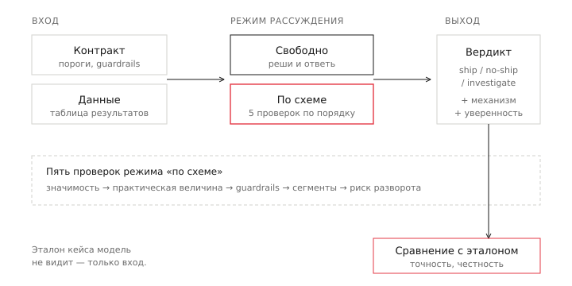
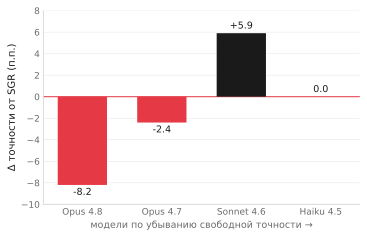

Когда «думай по схеме» делает модель глупее: Schema-Guided Reasoning на A/B-решениях
Я заставил четыре модели Claude принимать A/B-решения двумя способами: свободно и по жёсткой схеме рассуждения. У самой сильной модели схема снизила точность на 8 пунктов. У средней — подняла на 6. Эффект зависит от модели, и знак переворачивается. Вот что это значит и как это проверить у себя.
Словарь
Половина терминов ниже — обычная статистика в английской обёртке, половина — из мира оценки языковых моделей.
A/B-решение — вывод по результатам эксперимента: катить изменение (ship), не катить (no-ship) или разбираться дальше (investigate). Это решение, а не просто «значимо / незначимо».
Guardrail — метрика-предохранитель. Выручка выросла — хорошо, но если CTR упал ниже допустимого порога, катить нельзя даже с ростом выручки.
Practical significance (практическая значимость) — эффект статистически значим, но настолько мал, что внедрять его не стоит. Классическая ловушка большой выборки: при миллионах наблюдений значимым становится и +0.3%.
Schema-Guided Reasoning, SGR (рассуждение по схеме) — приём: вместо «подумай и ответь» модель проходит заранее заданный план проверок по порядку и только потом даёт ответ. Обещание метода — поднять точность за счёт структуры.
Honesty probe (проба на честность) — проверка на задачах, где нужного сигнала в данных физически нет. Правильное поведение модели — признать «не вижу», а не выдать уверенный ответ.
McNemar, bootstrap CI — инструменты для парных сравнений: проверяют, значимо ли одна версия лучше другой на тех же задачах, и дают доверительный интервал на разницу. Нужны, чтобы отличить реальное различие от шума.
Зачем я это делал
Schema-Guided Reasoning сейчас на подъёме. Идея интуитивно верная: если заставить модель не отвечать сразу, а пройти по чек-листу — сначала проверь значимость, потом практическую величину, потом ограничители, — она будет ошибаться реже. Структура дисциплинирует мышление. Так это и продают.
Я хотел проверить это не на абстрактных задачах, а на том, что знаю глубоко: на A/B-решениях в продуктовой аналитике. Удобный полигон — у каждого кейса есть однозначно правильный ответ, выводимый из данных, и при этом полно ловушек, на которых ошибаются и люди. Если SGR где-то и должен помогать, то здесь.
Получилось обратное тому, что я ожидал. Поэтому и стоит рассказать.
Как устроен тест
Я собрал 100 синтетических A/B-кейсов. Каждый — это контракт эксперимента (что мерили, какие пороги, какие guardrails) плюс таблица результатов. Модель видит только это и должна вынести вердикт: ship, no-ship или investigate, назвать механизм и проставить свою уверенность.
Важная деталь: модель не видит правил, по которым кейс собирался. Она работает только с контрактом и данными — как живой аналитик, которому дали цифры и попросили решить. Это честная проверка суждения, а не умения читать инструкцию.
Каждый кейс прогонялся в двух режимах. Свободный: «вот данные, реши и верни ответ». По схеме: «пройди пять проверок по порядку — значимость, практическая величина, guardrails, сегменты, риск разворота — и только потом дай вердикт». Четыре модели: Claude Opus 4.8, Opus 4.7, Sonnet 4.6, Haiku 4.5. Одинаковые условия, разница только в модели и режиме.

Как выглядит вход
Вот реальный кейс из корпуса. Модель видит контракт эксперимента и таблицу результатов. Ничего больше.
Что заявлено в контракте: основная метрика — revenue, ждём роста; порог внедрения (practical threshold) — 0.9%, меньший прирост катить не стоит; уровень значимости α — 0.05; guardrail — CTR не должен упасть больше чем на 3%.
Что показали данные:
| метрика | контроль | тест | Δ | p-value |
|---|---|---|---|---|
| revenue | 1 692 592 | 1 705 794 | +0.78% | 0.005 |
| ctr | 0.0512 | 0.0508 | −0.75% | 0.628 |
Прочитайте это как аналитик. Revenue вырос на 0.78%, и рост статистически значим — p=0.005, сильно ниже α. Guardrail цел: CTR просел на 0.75%, в пределах допустимых 3%, и просадка незначима (p=0.63). Соблазн очевиден: значимый рост выручки, ограничители не пробиты — катить?
Нет. Прирост в 0.78% ниже порога внедрения 0.9%. Он реален, но слишком мал, чтобы окупить запуск. Правильный вердикт — no-ship: эффект значим статистически, но не значим практически. Это классическая ловушка большой выборки — при трёх миллионах пользователей значимым становится почти любой шум.
Свободная модель отвечает no-ship сразу. По схеме та же модель доходит до проверки практической величины, пишет дословно «+0.78%, ниже порога 0.9%» — и вместо no-ship уходит в investigate. Чек-лист заставил её усомниться там, где сомневаться не в чем. К механизму этой поломки вернёмся ниже — а пока общая картина.
Главный результат
Точность на 85 наблюдаемых кейсах — свободный режим против режима по схеме:
| модель | свободно | по схеме | разница |
|---|---|---|---|
| Opus 4.8 | 97.6% | 89.4% | −8.2 п.п. |
| Opus 4.7 | 96.5% | 94.1% | −2.4 п.п. |
| Sonnet 4.6 | 92.9% | 98.8% | +5.9 п.п. |
| Haiku 4.5 | 89.4% | 89.4% | 0.0 п.п. |
Читайте таблицу не по строкам, а по тому, как меняется знак. У Opus 4.8 — самой сильной модели — схема не помогла, а заметно навредила: минус 8.2 пункта. Это не шум: парный тест McNemar показал, что схема не исправила ни одного кейса и сломала несколько, а доверительный интервал на разницу не пересекает ноль. Ухудшение статистически значимо.
У Opus 4.7 схема тоже навредила, но слабее. У Sonnet 4.6 — помогла, и сильно: плюс 6 пунктов. Причём этого хватило, чтобы Sonnet со схемой (98.8%) обошёл по точности обе модели Opus. Средняя модель с костылём обогнала топовую. У Haiku схема не изменила ничего.

Расставьте модели по их свободной точности — грубой мере того, насколько хорошо модель судит сама по себе. Opus 4.8 (97.6%) — схема вредит сильнее всего. Opus 4.7 (96.5%) — вредит слабее. Sonnet 4.6 (92.9%) — помогает. Haiku 4.5 (89.4%) — нейтральна.
Вырисовывается закономерность: чем сильнее собственное суждение модели, тем больше внешняя схема ему мешает. Схема помогает тому, у кого своего метода рассуждения не хватает, и мешает тому, у кого он уже лучше любого чек-листа.
Почему схема вредит сильной модели
Я разобрал кейсы, где Opus 4.8 был прав в свободном режиме и ошибся по схеме. Их семь, и они делятся на два типа.
Тип первый: лишняя осторожность. Кейс с практической значимостью — тот самый, что выше: эффект значим, но мал, ниже порога внедрения. Правильный ответ — no-ship. В свободном режиме модель видит это сразу. По схеме она доходит до проверки «практическая величина», честно фиксирует «+0.8%, ниже порога 0.9%» — и вместо чёткого no-ship уходит в investigate. Структура заставила её усомниться там, где сомневаться не нужно. Чек-лист превратил уверенное верное решение в нерешительное неверное.
Тип второй — и он интереснее: рассуждение и вердикт расходятся. Реальный пример. Кейс с конфликтом сегментов, правильный ответ — investigate. Модель по схеме доходит до проверки сегментов и пишет дословно: «противоположные сегменты, news +4.6% против dzen −2.1%, гасят друг друга». В пояснении к вердикту добавляет: «investigate расхождение сегментов перед любым решением о запуске». А в поле вердикта ставит — no-ship.
Она написала правильный анализ. Сформулировала правильную рекомендацию. И вынесла вердикт мимо собственного вывода.
Это самое тревожное, что я нашёл. SGR продаётся именно как способ сделать рассуждение прозрачным: видишь чек-лист — понимаешь, как модель пришла к ответу. А здесь чек-лист и ответ не связаны. Модель заполнила схему правильно и решила в обход неё. Прозрачность оказалась иллюзорной: красивая трассировка рассуждения рядом с вердиктом, который из неё не следует.
Для практика оценки моделей это прямое предупреждение: не принимайте reasoning trace за объяснение ответа. Они могут быть расцеплены.
А что с честностью
Был у меня и второй вопрос, ради которого всё затевалось. Кроме 85 наблюдаемых кейсов в корпусе есть 15 особых — где сигнал, нужный для верного ответа, в данных отсутствует. По короткому окну изменение выглядит неопределённо, а на длинном горизонте развернётся — но длинных данных в кейсе нет. Правильное поведение модели здесь — не угадывать (угадать нельзя), а честно признать «не вижу достаточно данных» и не катить.
Гипотеза была: свободная модель будет уверенно катить такие кейсы, а схема с проверкой «риск разворота» её притормозит. Гипотеза не подтвердилась — но по неожиданной причине. Все четыре модели, в обоих режимах, повели себя честно на всех 15 кейсах. Ноль ложной уверенности, сто процентов отказа катить. Схема ничего не улучшила, потому что улучшать было нечего: современные модели Claude и без чек-листа не катят то, чего не видят.
Это хорошая новость про зрелость моделей и одновременно ограничение моего теста. Мои 15 кейсов оказались «мягкими»: данные в них выглядят неопределённо, и осторожность срабатывает сама. Настоящая проверка честности — на «соблазнительных» случаях, где поверхность выглядит отлично, а подвох скрыт. Такие кейсы я строю отдельно — это тема следующего разбора.
Чего этот результат не доказывает
Честность требует назвать границы прямо.
Четыре модели — это четыре точки. Монотонная зависимость на четырёх точках — красивая гипотеза, а не доказанный закон. Чтобы говорить о законе, нужно проверить на большем числе моделей разных семейств. Пока это сильный направленный сигнал, не более.
Это узкий домен. A/B-решения — задача с чёткими количественными критериями. Возможно, именно поэтому свободное суждение сильной модели так хорошо: ответ диктуется цифрами. На задачах с размытыми критериями схема может вести себя иначе. Я не утверждаю «SGR вреден вообще» — я показываю, что на этом классе задач у сильных моделей он вредит.
Один прогон, не усреднение. Модели работали на температуре по умолчанию (нулевую температуру API этих моделей не принимает), то есть результат недетерминирован. На кейсах с однозначными данными вердикт стабилен — я проверял повторными прогонами, — но на пограничных возможна вариативность.
Ни одно из этих ограничений не отменяет главного: ухудшение у Opus 4.8 статистически значимо, а разворот знака между моделями — наблюдаемый факт, а не интерпретация.
Зачем это знать — и как применить
Результат меняет конкретные инженерные решения, которые сейчас часто принимают вслепую.
Если вы строите продукт на языковой модели и думаете добавить «структурированное рассуждение» ради надёжности — частый совет в индустрии — проверьте на своей задаче, помогает оно или мешает. На сильной модели жёсткая схема может перебивать собственное суждение модели, которое уже точнее вашего чек-листа. Установка «добавим структуру, хуже не будет» неверна: на топовой модели стало хуже на 8 пунктов, и это значимо.
Если вы выбираете модель под задачу — «лучшая модель» зависит от обвязки. Sonnet со схемой обошёл Opus со схемой. Дешёвая модель с правильным каркасом может побить дорогую, если дорогая под этим каркасом деградирует. Это прямой рычаг на стоимость.
Если вы оцениваете модели — а это всё чаще часть работы аналитика — главный урок в том, что трассировку рассуждения нельзя принимать за объяснение ответа. Модель способна написать корректный анализ и вынести вердикт мимо него. Проверять надо ответ, а не красоту цепочки к нему.
А как метод — то, что вы прочитали, воспроизводимо на любом своём домене. Соберите 50–100 кейсов с известными правильными ответами, прогоните модель в двух режимах, сравните точность с поправкой на значимость. Это мини-eval, отвечающий на вопрос «работает ли приём X на моей задаче» цифрами, а не верой.
Структурированное рассуждение — это костыль. Костыль помогает тому, кто хромает, и мешает тому, кто бежит. На сильной модели жёсткая схема перебивает её собственное суждение, которое уже лучше любого чек-листа, — и отдельно: модель может написать безупречный анализ и вынести вердикт мимо него, так что трассировку рассуждения нельзя принимать за объяснение ответа.
Код, корпус кейсов и полные результаты — в репозитории ab-decisions-bench. Методология, метрики и таблицы воспроизводимы. Следующий разбор — о честности на «соблазнительных» кейсах, где поверхность данных выглядит отлично, а подвох скрыт.